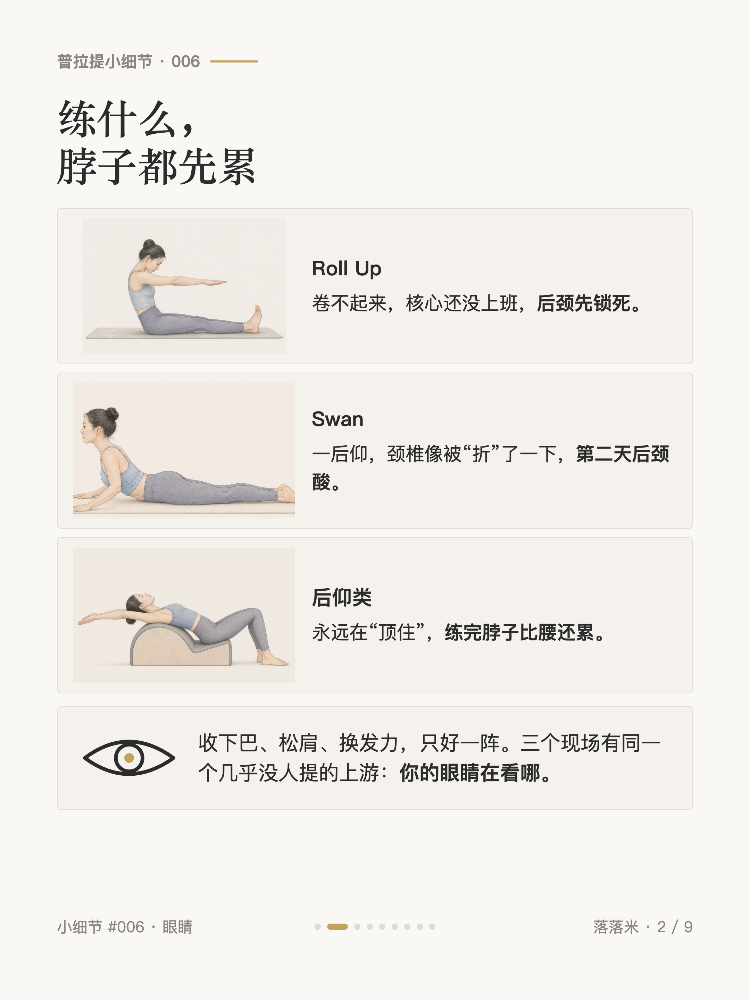
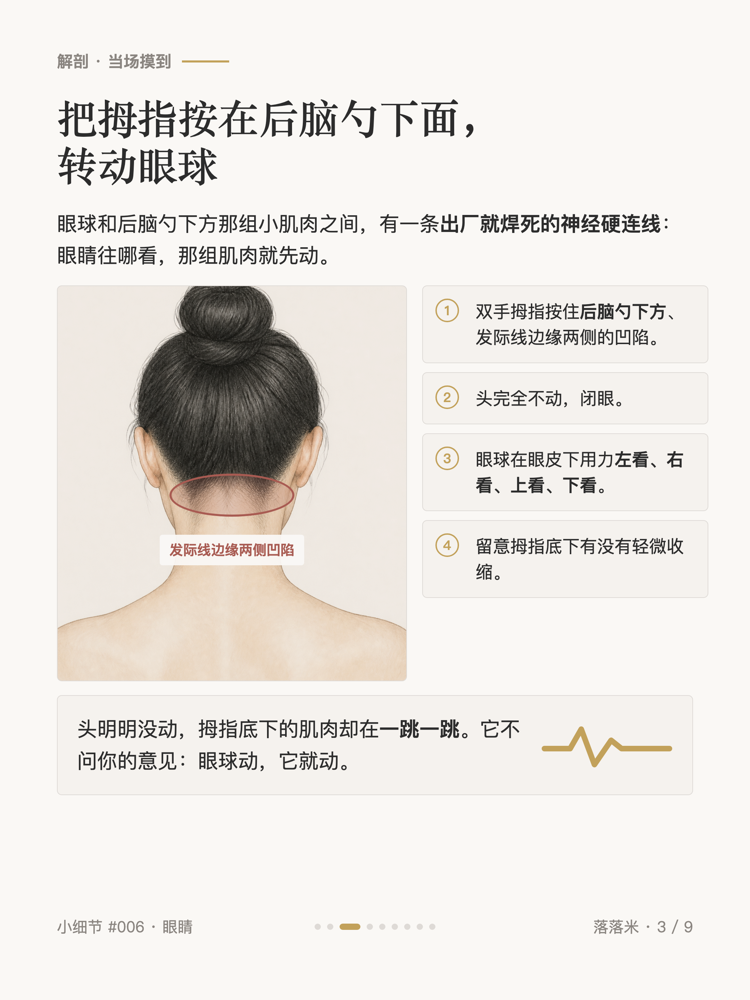
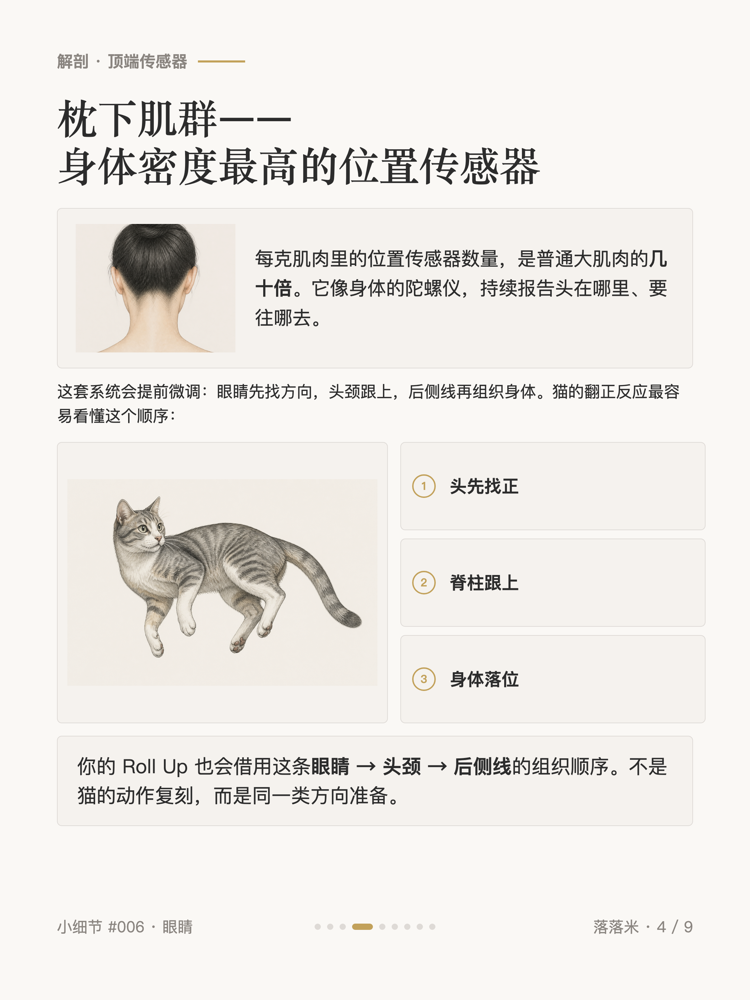
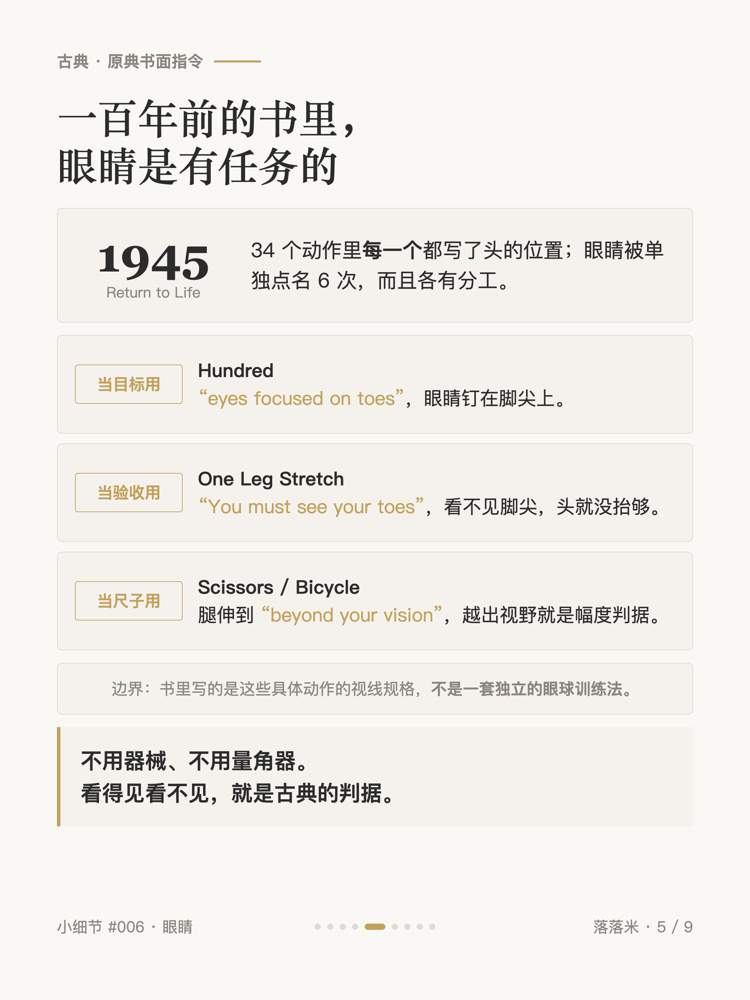
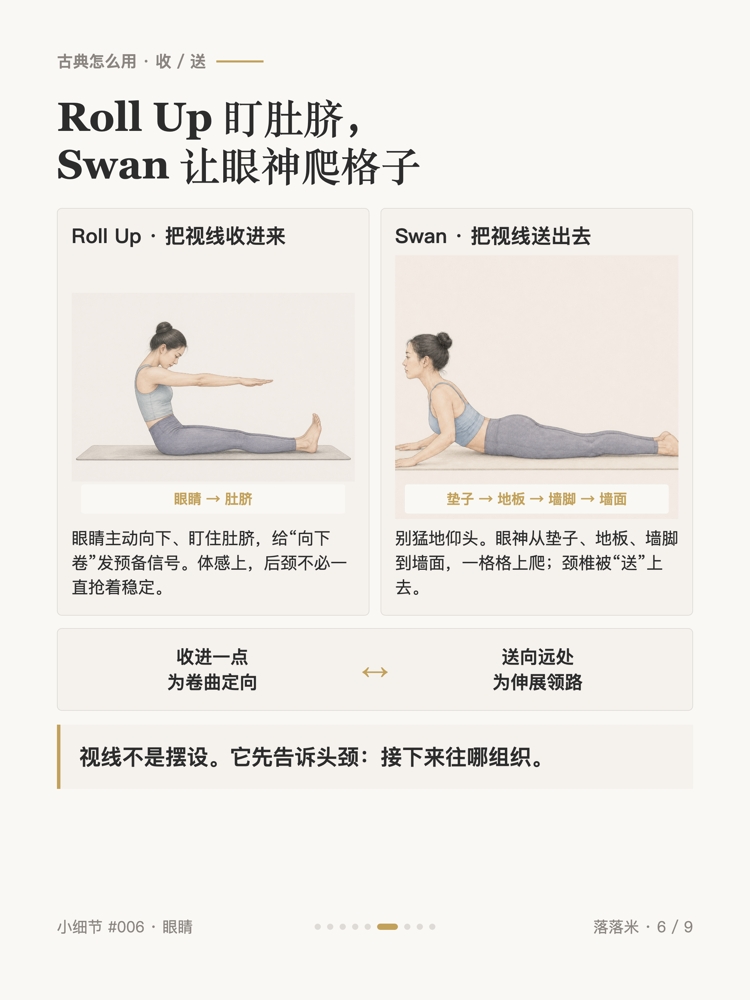
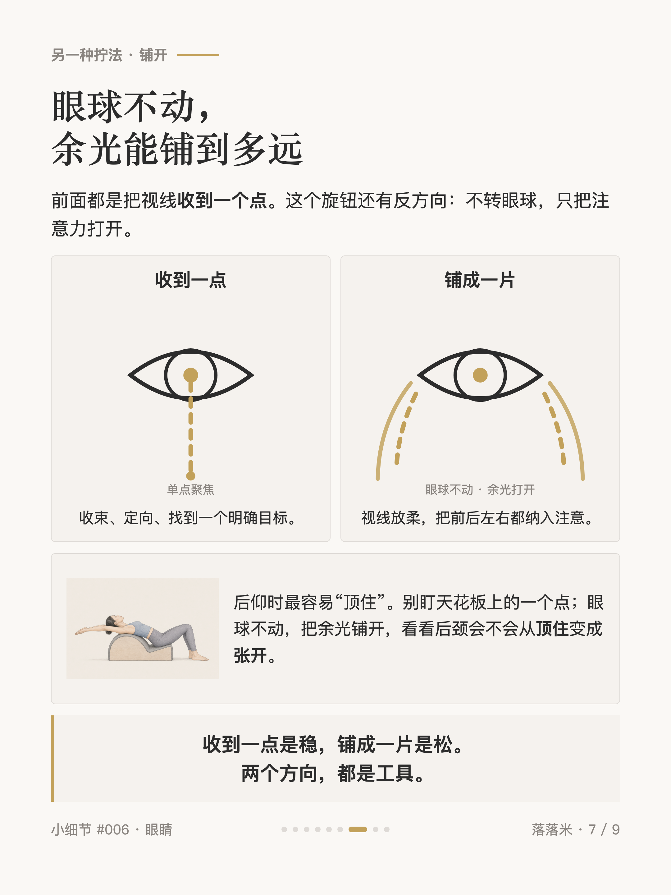
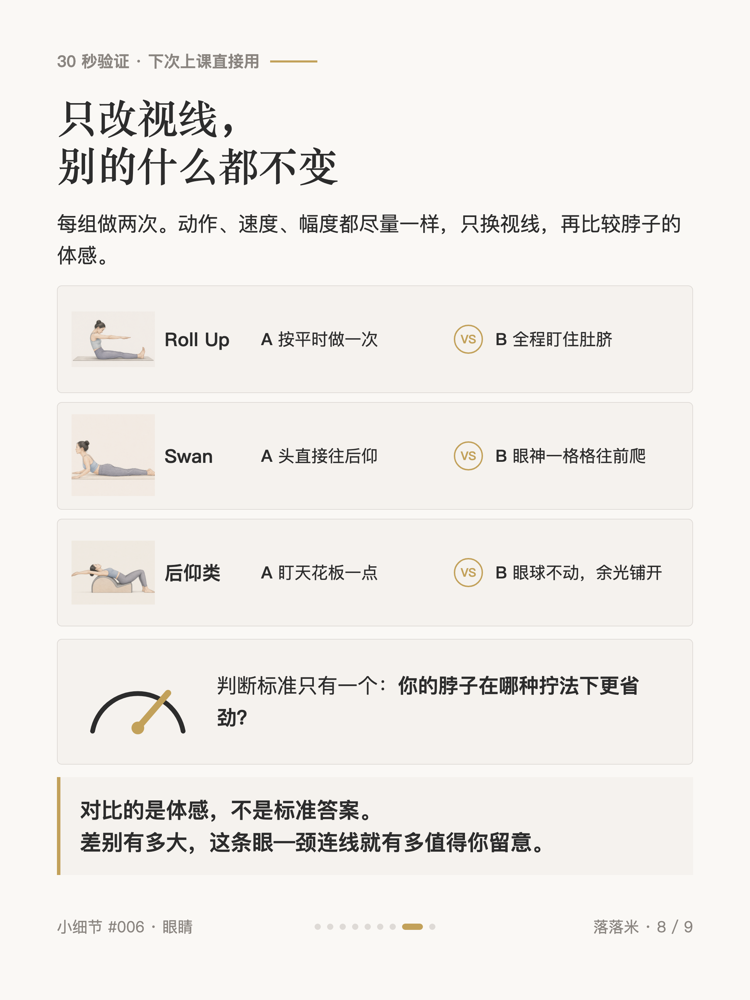
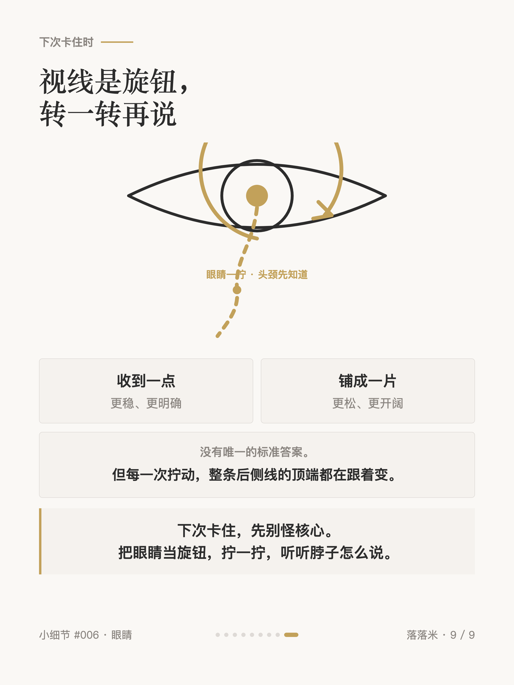

普拉提小细节 #006
卷不起来，先看你的眼睛

1 / 9

2 / 9

3 / 9

4 / 9

5 / 9

6 / 9

7 / 9

8 / 9

9 / 9
← 左右滑动浏览全部卡片 →
Roll Up 卷不起来、脖子后侧先锁死，你以为是核心不够——先别，问问你的眼睛在看哪。眼球和后脑勺下方那组小肌肉之间，有一条出厂就焊死的神经连线：眼睛往哪看，它先动；而它正好是整条后侧线的最顶端。现在就能摸到——拇指按住后脑勺下方发际线边缘的凹陷，头完全不动，闭眼转眼球，拇指底下的肌肉在一跳一跳。
所以 Roll Up 时眼睛盯住肚脐，等于给「向下卷」发了预备信号，脖子后侧不用再抢活；Swan 时让眼神沿地板一格格往前爬，颈椎是被「送」上去的，不是「仰」上去的；后仰类动作反着拧——眼球不动，把余光铺开，脖子从「顶住」变成「张开」。视线没有唯一的正确答案，它是个可以拧的旋钮：收到一点是稳，铺成一片是松。